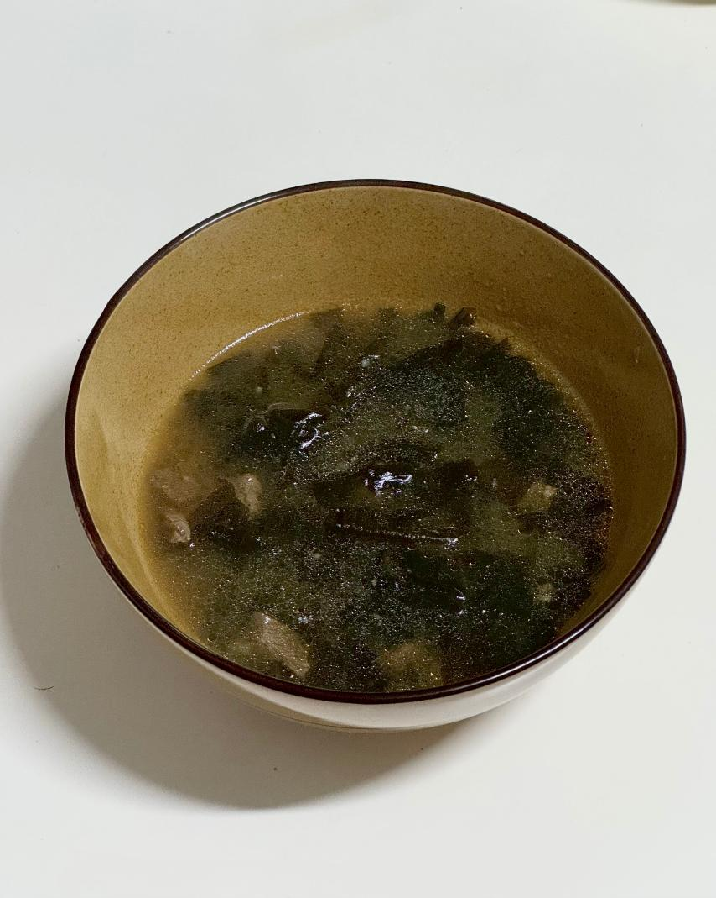

- 미역국 -
바다의 향을 담은 건강 한 끼

📝 재료
- 소고기 - 종이컵 1/2 (100g)
- 미역 - 종이컵 1/3
- 국간장 - 3 큰술
- 참기름 - 2 큰술
- 마늘 - 2/3 큰술
- 액젓 - 1.5 큰술
🍳 만드는 법
- 미역을 물에 충분히 불려줍니다.
- 냄비에 참기름을 두르고 고기를 볶아줍니다.
- 고기의 붉은 기가 사라지면 불린 미역을 넣고 함께 볶아줍니다.
- 미역이 잘 볶아지면 국간장을 넣고 조금 더 볶은 뒤, 물을 부어줍니다.
- 국물이 끓기 시작하면 다진 마늘을 넣어줍니다.
- 약불로 조금 더 끓이다가 액젓으로 간을 맞춰주면 완성입니다.
💡 TIP
집에 소고기가 없다면 돼지고기로도 미역국을 끓일 수 있어요.
진하고 구수한 국물이 완성되지만, 다소 느끼할 수도 있어요.